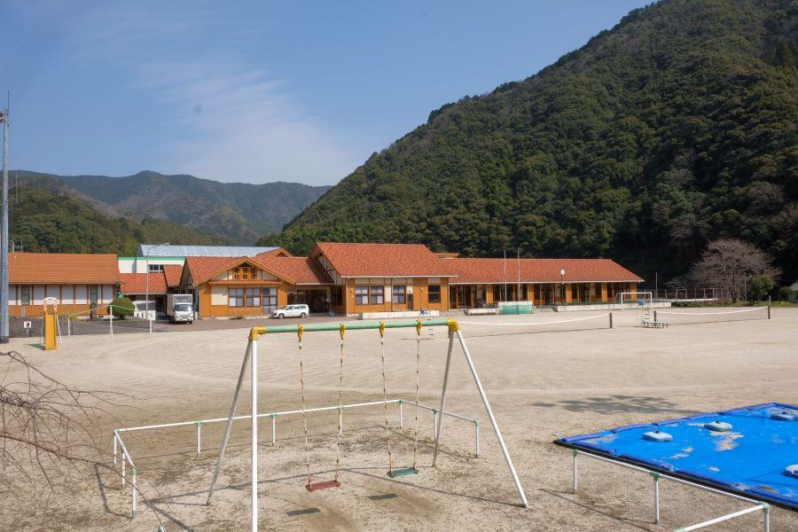
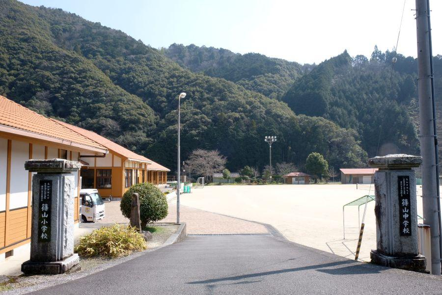
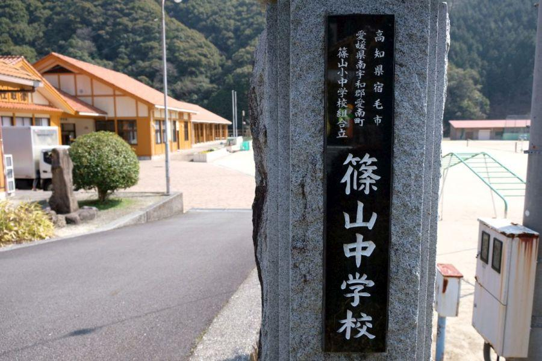
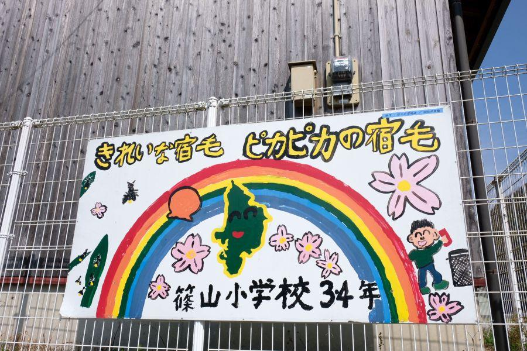
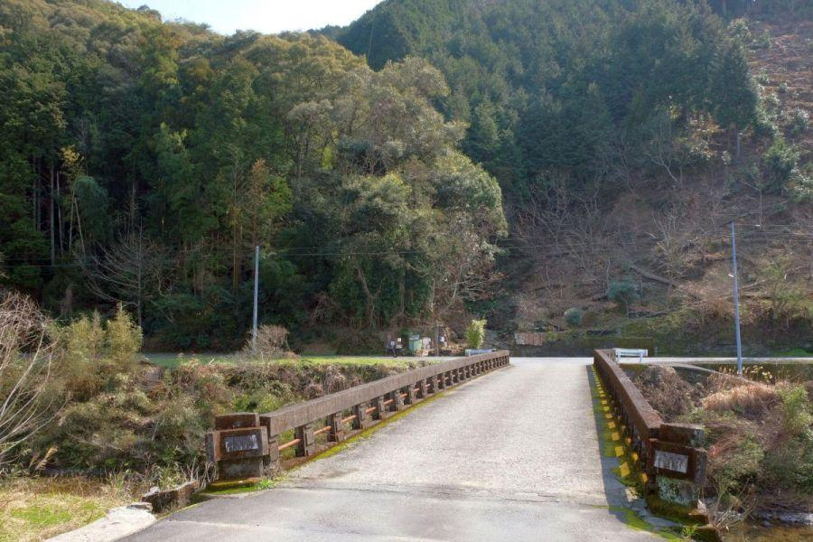
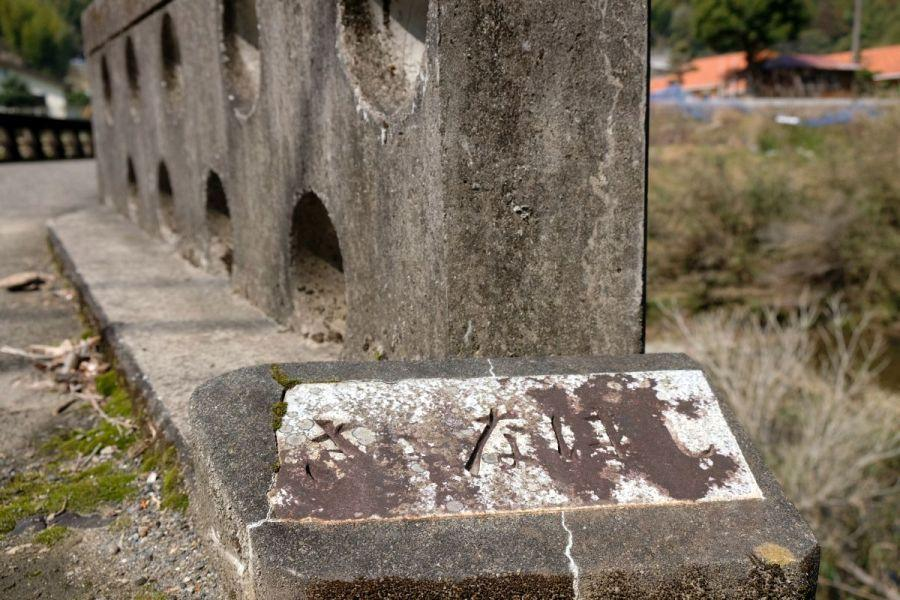
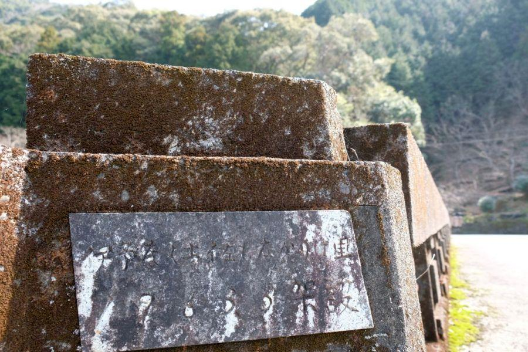
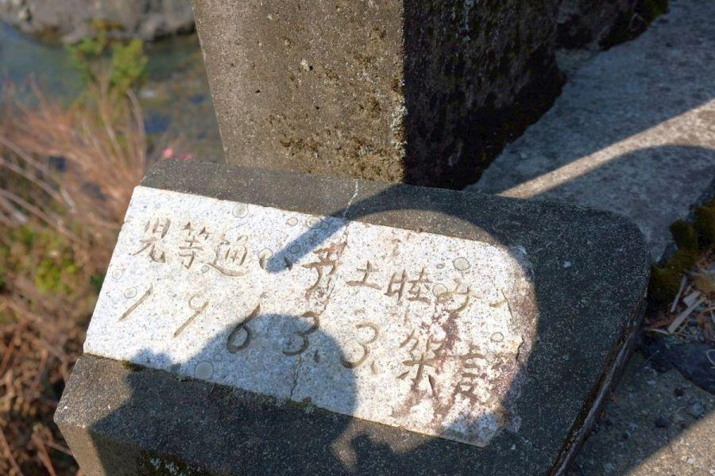
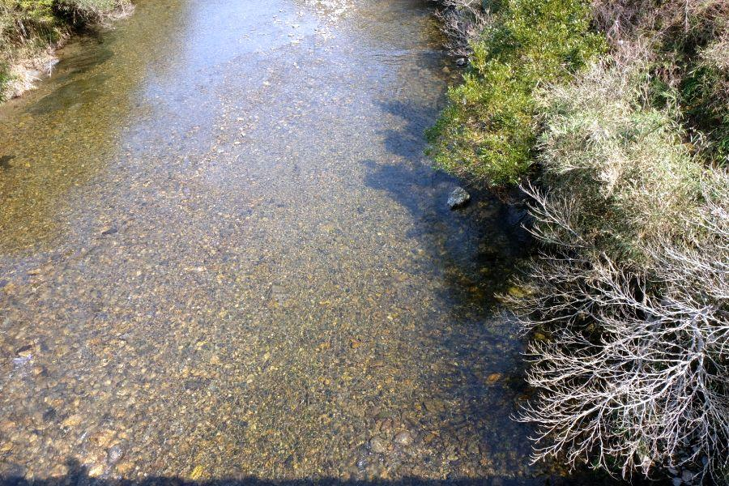

日本一長い学校名 < 高知県宿毛市愛媛県南宇和郡愛南町篠山小中学校組合立篠山小学校 / 愛媛県愛南町 >

山間に位置するモダンな新築校舎。
こんな環境で勉学に励むことができたら... と憧れるようなロケーション。実はここ、ある日本一を持つ学校なんです。
正式名称は31文字！ ぶっちぎり日本一

こちら校門。門塀や柵は無く 門柱のみ。
ちなみに小中一貫校です。
小学校は児童数が多く無いので、子どもたちは複式学級で学びます。全国へき地教育研究連盟(全へき連) 加盟校。

その名称が...
高知県宿毛市愛媛県南宇和郡愛南町篠山小中学校組合立篠山小学校
言えますか？
31文字は 国内の教育機関の中で最も長い名称。

中学校は、
高知県宿毛市愛媛県南宇和郡愛南町篠山小中学校組合立篠山中学校
"小" が "中" に変わるだけで、文字数は同じ。
昭和29年までは、
昔 : 高知県幡多郡宿毛町愛媛県南宇和郡一本松村篠山小中学校組合立篠山中学校
今 : 高知県宿毛市愛媛県南宇和郡愛南町篠山小中学校組合立篠山中学校
更に四文字長かったそうです。
組合立って？

組合立 → 正式には 「一部事務組合」 と呼びますが、行政サービス等で 複数の自治体に跨ってサービスを行う組織のこと。
パッと思いつくところでは、消防なんかがそのようなところが多いです。
●市 に接している ×町があったとします。
×町の●市に隣接する市町界区域で火災が発生した時。●市の消防署の方が近いのに、自分ところだからと 遠い×町の消防署から消防自動車が来ないといけない。そんなことしていたら 助かる命が失われます。
※ 全ての境界地域がそうなっているわけではありません
他の公共サービスで言えば、火葬場やごみ処理場、地方競馬など公営競技の主催者等が 組合立で運営されていることが あります。
篠山小中学校のように 公立学校が組合立で運営されているところは、
長野県の塩尻市・上伊那郡辰野町の境界地域に "両小野小学校" と言う名称の学校がありますが、これもそれぞれの自治体による組合立。
一般的に市町村境界エリアは 市街地から離れ集落規模が小さくなってしまうため、学校などは児童・生徒数確保の問題で 運営が困難になることが多い。組合制度は お互いを補い合うことができるということですね。
それでいくと、篠山小中学校の校区も 宿毛市 / 愛南町 どちらの自治体にとっても端っこ同士。単独では学校の運営が厳しいところですが、ここは前述の自治体同士はもちろん、高知県 / 愛媛県 という県を跨いで一部事務組合を設立することで、学校を運営しています。
調べて見ると 日本全国に組合立の学校は思っていたよりたくさんありましたが、二県跨ぎの小学校中学校は 篠山小中学校だけです。
予土國境、争いの歴史

篠山小中学校近くに架かる橋。
この辺りは 下を流れる篠山川が 愛媛 / 高知 の県界になっているので、主には高知県の児童・生徒さんたちが この橋を渡って登校します。

さゝなはし(篠南橋)
この地域の方々は、お互いが少ないものを補うために、さぞ 昔から近隣同士助け合って暮らしてきた...
実は全く逆です。

伊予なく土佐もなかりけ里
1963,3架設
愛媛県南予 / 高知県西南地域
の境界は、昔から騒動のタネ。伊予と土佐で ある時は島(沖の島ほか)を取り合い、ある時は山(霊峰篠山)を取り合い...
時には死傷者が出るほど紛糾することもあったという。そのため 廃藩置県時の県界確定は、両県の知事と政府の官僚の三者立会いの下 騒動を収束させた、と伝わるほど。

児等通い予土睦み●●(不明)
1963,3,架設
予土國境を巡っての争いの歴史...
そのような黒歴史を これからの世代に引き継ぐわけにいかない。
過ちを繰り返さないために 自戒の意味を込めて、高知・愛媛の両生徒たちが出会うこの場所に、深く刻まれたものだそうです。
地域のシンボル・篠山

橋の上から見る篠山川
標高1,064mの篠山を源流とする川の水は、とてもきれいです。

川を県境に、
左... 愛媛県
右... 高知県
どちらも篠山小中学校の校区です。
奥のうっすらと佇む山が 霊峰・篠山。土佐・伊予 両地域の方々にとって 心の拠り所であり、春にはアケボノツツジが咲き誇るお花の名山でもあります。
高知県宿毛市愛媛県南宇和郡愛南町篠山小中学校組合立篠山小学校(篠山中学校)
< 自家用車 >
高松駅から 約4時間、289km
松山空港から 約2時間20分、147km
高知龍馬空港から 約2時間40分、161km
※ 主な地点からの最速・最短距離